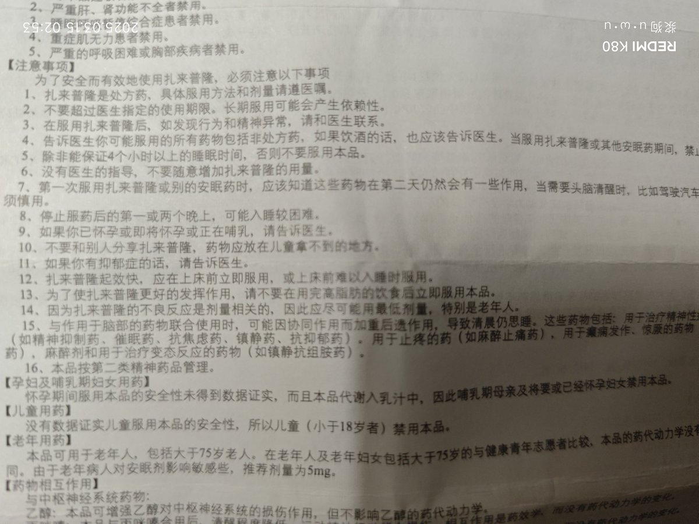
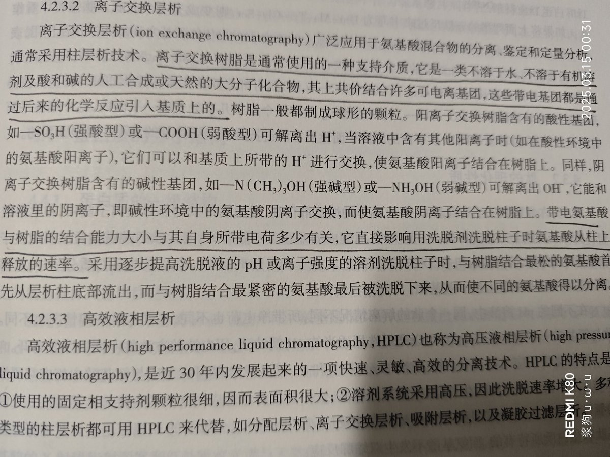

焦糖蘋果醬配奶油麵包片 u･ω･u
@Coccus_Swamer
感觉没什么药效，，，果然和唑吡坦共用受体也共用耐受吗，，，明天后天再这样我要吃点歪门邪道强制戒跳反性失眠了。
今天发现我的五年前的笔记本已经连以撒都带不动了。晚上睡不着把波拉尼奥的《2666》看完了，感觉拉美文学又魔幻又费精力，真的已经很累了。


焦糖蘋果醬配奶油麵包片 u･ω･u
@Coccus_Swamer
唑吡坦bzd耐受了换扎来普隆试试，这款的说明书风格写得又可爱又好笑感觉像什么规则怪谈。 https://t.co/4wn0FhnISx